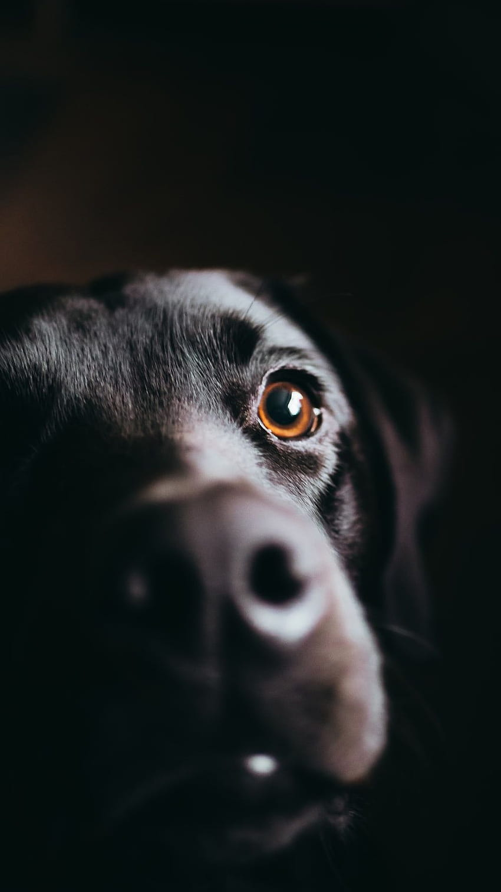

Alguns donos de animais não sabem dimensionar a importância
da clínica veterinária para o bem-estar de seu pet. Levar
o animal de estimação ao veterinário periodicamente deve
começar desde cedo, para que sejam realizados os primeiros
exames necessários para avaliar a saúde dele.
Assim como os humanos, eles precisam de cuidados médicos, como vacinação,
vermifugação, diagnóstico de doenças, exames laboratoriais, tratamentos e
até exames mais complexos como o check-up — para avaliar seu estado geral.
Continue a leitura e confira as vantagens que esse cuidado, de levá-lo
regularmente à clínica veterinária, pode trazer para o conforto do animal
de estimação. Acompanhe!
Não maltrate os Animais

Fundado em 23.07.2002, o Plantão Veterinário sempre priorizou
a ética Médica, praticando um atendimento focado em resultados
positivos aos seus pacientes, isso sob uma ótica que visa
considerar a vida animal como uma criação divina.
Foi diante deste princípio que avançamos profissionalmente,
chegando à condição de Hospital, referência na prática de atendimentos
clínicos, cirúrgicos e demais procedimentos, além de exames de última
geração. Nossa unidade conta hoje com um corpo Médico-Veterinário
de especialistas altamente capacitados e uma estrutura de primeiro mundo,
capaz de atender às mais complexas necessidades de socorro animal.
Sob a tendência da Vanguarda e sempre investindo em melhorar o atendimento
aos pacientes, o Hospital Plantão Veterinário oferece o mais completo
universo de cuidados, com a garantia de que todo animal que nele der
entrada, receberá o que há de melhor, na busca de preservar a vida
com dedicação e profissionalismo.